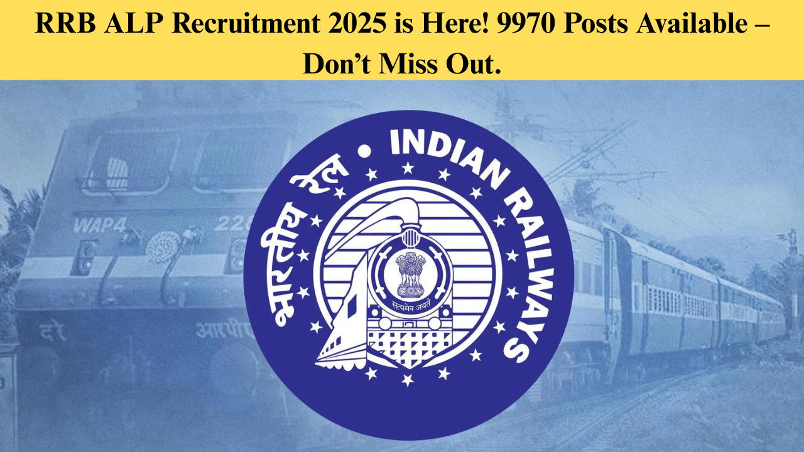

RRB ALP Recruitment 2025 is Here! 9970 Posts Available – Don’t Miss Out.
article posted on / 12/04/2025
The Railway Recruitment Board (RRB) conducts RRB ALP Examination to fill the vacancies for the post of Assistant Loco Pilot. Indian Railways has released 9970 Assistant Loco Pilots vacancies to be filled this year. Lakhs of candidates holding Matriculation / SSLC pass certificates with ITI and Diploma between 18 to 30 years will be able to apply for RRB ALP Recruitment 2025. The online application process has started at www.rrbapply.gov.in from 12th April 2025 onwards after publishing the official notification pdf.
RRB ALP Notification 2025 Out
The Railway Recruitment Board published the detailed notification PDF for RRB ALP Recruitment 2025 Notification (CEN No. 1/2025) for 9970 Vacancies of Assistant Loco Pilots posts on the official website. Candidates should read the attached advertisement below for the RRB ALP 2025 exam before applying for the Assistant Loco Pilots (ALP) posts.
RRB ALP Recruitment 2025
RRB ALP Recruitment 2025 will be held for shortlisting the candidates for Assistant Loco Pilots vacancies. The candidates will be selected through the CBT 1, CBT 2 and CBAT Exam to recruit 9970 vacant positions. Check out the overview for the RRB ALP 2025 Exam from the tabular information below.
| RRB ALP Recruitment 2025- Summary | |
|---|---|
| Organisation | Railway Recruitment Board (RRB) |
| Posts Name | Assistant Loco Pilots |
| Vacancies | 9970 |
| Advt. No | 01/2025 |
| Registration Dates | 12th April to 11th May 2025 |
| Medical Standard | A-1 |
| Selection Process |
|
| Initial Salary | Rs.19,900/- |
| Pay Level | Level-2 |
| 18 to 30 Years | Matriculation + ITI/ Diploma Course |
| Across India | Across India |
| Official Website | https://www.rrbcdg.gov.in/ |
RRB ALP Recruitment 2025 Important Dates.
The detailed notice has been published on 11th April 2025 at the regional websites of the Railway Recruitment Board and the online application link has been opened on 12th April 2025 onwards https://www.rrbapply.gov.in/. The entire online calendar for Railway Recruitment 2025 for ALP vacancies has been listed below-
| Events | |
|---|---|
| RRB ALP 2025 Notification | 11th April 2025 |
| Last Date of RRB ALP Apply Online 2025 | 11th May 2025 |
| Last Date of Payment of Fees | 13th May 2025 (11:59 pm) |
| Dates for Modification window for corrections in application form with payment of modification fee | 14th to 23rd May 2025 |
| RRB ALP Application Form Modification | To be notified |
RRB ALP Vacancy 2025
RRB ALP Vacancy 2025 has been notified by the Railway Recruitment Board (RRB) for 9970 Assistant Loco Pilot posts to be recruited through RRB ALP Recruitment 2025. The RRB ALP Vacancy has been notified for all 21 RRBs. The category-wise and region-wise RRB ALP Vacancy 2025 has also been notified with the notification pdf release.


RRB ALP 2025 Eligibility Criteria
The needed eligibility requirements for RRB ALP Recruitment 2025, as stated in the notice, have been described below. In case you wish to apply for these positions, read through the RRB ALP Eligibility, Educational Qualification and Age limit mentioned below.
RRB ALP Educational Qualification
The applicants for the job of RRB ALP should have the following minimum educational qualifications to be eligible for the respective posts:
RRB ALP Age Limit
The age of the candidates applying for RRB ALP (Assistant Loco Pilot) should be within the given age limit as 18 to 30 years as on 01/07/2025, i.e., you should be in this age bracket at the time of application. Candidates should have been born between the years as shown in the above table to be able to apply for RRB ALP Recruitment 2025.
RRB ALP Upper Age Relaxation
| Category | Age Relaxation |
|---|---|
| SC/ST | 5 years |
| OBC (NCL) | 3 years |
| Ex-Servicemen (more than 6 months of service after attestation) | Up to the extent of service rendered in Defence plus 3 years |
| PWD | 10 years + relaxation for the respective category |
| Candidates ordinarily domiciled in the State of Jammu & Kashmir during the period from 01.01.1980 to 31.12.1989 | 5 years |
| Candidates who are serving Group 'C' and Erstwhile Group 'D' Railway Staff, Casual Labour and Substitutes in Railways who have put in a minimum of 3 years of service (continuous or in broken spells) | 40 years of age (UR) 43 years of age (OBC-NCL) 45 years of age (SC/ST) |
| Candidates who are working in Quasi-Administrative offices of the Railway organization such as Railway Canteens, Co-operative Societies and Institutes | Up to the length of service rendered (or) 5 Years, whichever is lower |
| Women candidates who are widowed, divorced or judicially separated from husbands but not remarried. | 35 years of age (UR) 38 years of age (OBC-NCL) 40 years of age (SC/ST) |
| Candidates who are Course Completed Act Apprentice under the Apprenticeship Act before attaining the age of 25 years | 35 years of age (UR) 38 years of age (OBC-NCL) 40 years of age (SC/ST) |
RRB ALP Physical and Medical Standard Requirement
It is important for the candidates who are planning the RRB ALP 2025 exam to be fit both physically and medically. The Medical Standard should be A-1 and eye vision of the candidates should be as per the data tabulated below.
| RRB ALP Physical and Medical Standard Requirement | |
|---|---|
| Medical Standard | A1 |
| Physical Standard | Physically Fit in All Standards |
| Vision Standard | Distant Vision: 6/6, 6/6 Without glasses with fogging test (must not accept +2D) Near Vision: Sn: 0.6. 0.6 Without glasses Must Pass test for Color Vision, Binocular Vision, Field of Vision, Night Vision, Mesopic Vision, etc. |
RRB ALP Recruitment 2025 Selection Process
The selection will be made according to the RRB ALP Recruitment 2025 Selection Process rules. Railway Zone and RRB-wise vacancies are published along with the notification pdf. Candidates can select only one RRB and give their preference for the Railway zones. The post-wise selection process with stages has been tabulated below-
| RRB ALP Recruitment 2025 Selection Process |
|---|
|
RRB ALP 2025 Application Form
The applicants need to fill up online application forms in order to register for the RRB ALP Recruitment 2025. The dates for online registration have been released along with the RRB ALP Notification 2025. Applicants can apply online for RRB ALP Recruitment 2025 on 12th April 2025 when the registration will begin and the last date to submit application forms will be 11th May 2025. The applicants should submit their duly filled application form before the last date. The candidate can put in applications for only 1 RRB; if the candidate submits multiple applications, the candidate will be disqualified for subsequent RRB exams.
RRB ALP Recruitment 2025 Application Fee
Candidates need to remit the application fee at the time of completing their RRB ALP Application Form 2025. Non-payment of the amount will lead to application rejection.
| Category | Application Fee |
|---|---|
| SC / ST / Ex-Serviceman / PWDs / Female / Transgender / Minorities / Economically backward class. (The fee for these categories shall be refunded after deducting bank charges as applicable, on appearing in First Stage CBT.) | Rs. 250 |
| Others | Rs. 500 |
RRB ALP Recruitment 2025 Exam Pattern
RRB ALP 2025 selection shall be through 4 stages of exams, that is CBT 1, CBT 2, CBAT and Document Verification. Exam patterns CBT 1, CBT 2 and CBAT are stated below along with the detailed syllabus.
RRB ALP CBT 1 Exam Pattern
RRB ALP 2025 CBT 1 exam will be held in online mode for 75 marks. There will be 75 questions, which have to be done within 60 minutes. The questions in Computer-Based Test (CBT) 1 exam are asked in Mathematics, General Intelligence & Reasoning, General Science, and General Awareness of Current Affairs.
Marking Scheme: 1 mark for each correct answer.
Negative Marking: ⅓ mark for each incorrect answer.
The minimum pass percentage for the CBT 1 Exam is as follows:
- UR & EWS-40%
- OBC (NCL)-30%
- SC-30%
- ST- 25%.
Note: Those candidates who clear the CBT 1 exam, will be shortlisted for the next round. Shortlisting of candidates for the CBT 2 exam (Second Stage) shall be carried out RRB-wise at the rate of 15 (fifteen) times the vacancies for that RRB and It will be merit based on their performance in the CBT 1 exam. The marks will be normalized in all the stages of the exam that are conducted through multiple shifts. CBT 1 exam would be a mere screening exam to shortlist such candidates eligible for CBT 2. Marks obtained in CBT-1 shall not be included while finalizing the merit list.
RRB ALP CBT 2 Exam Pattern
RRB ALP 2025 CBT 2 will also be held in online mode. The total time for the CBT 2 exam is 2 hours and 30 minutes. There will be two segments of the CBT 2 exam that are Part A and Part B. Part A contains questions of Mathematics, General Intelligence & Reasoning, General Science, and General Awareness of Current Affairs and Part B will contain questions based on Relevant Trades. Let us take a glance at the RRB ALP CBT 2 Exam Pattern.
Marking Scheme: 1 mark for each right answer, ⅓ mark deducted for each wrong answer.
Computer-Based Aptitude Test (CBAT)
The candidates who pass the CBT 2 and 2 examination will be summoned for round 3 i.e. Computer-Based Aptitude Test (CBAT), and then the final selection list will be drawn up. There will be no negative marking in the Computer-Based Aptitude Test (CBAT) round.
RRB ALP Recruitment 2025 Syllabus
Having the complete RRB ALP Recruitment 2025 Syllabus would make the candidates prepare for the examination very effectively and obtain good marks. RRB ALP Syllabus for CBT 1 Exam comprises subjects of Mathematics, General Intelligence & Reasoning, General Science, and General Awareness of Current Affairs. In RRB ALP CBT 2 Exam, questions are from Mathematics, General Intelligence & Reasoning, General Science, General Awareness of Current Affairs and Applicable Trades. To fulfill the RRB ALP 2025 Syllabus, click on the link below.
RRB ALP Salary Structure
According to the 7th Central Pay Commission (CPC) pay scale, the minimum pay for an Assistant Loco Pilot is between Rs. 19,900 and Rs. 35,000 per month. This may change based on the location of posting and other allowances. The shortlisted candidates will be provided with Level 2 of the Pay Matrix Level 2 with an initial pay scale of INR 19,900 and other allowances including-
- House Rent Allowance (HRA)
- Dearness Allowance (DA)
- Running Allowance (Based on the km travelled)
- Transport Allowance
- New Pension Scheme (10% Deduction) etc.
RRB ALP Recruitment 2025 Participating RRBs
The candidates will be appointed as Assistant Loco Pilots in the below mentioned Railway Recruitment Boards (RRBs) through RRB ALP Recruitment 2025. This list has been published along with the official advertisement.
| RRB ALP 2025 Participating RRBs | |
|---|---|
| RRB Regions | Official website |
| Ahmedabad | www.rrbahmedabad.gov.in |
| Ajmer | www.rrbajmer.gov.in |
| Bengaluru | www.rrbbhopal.gov.in |
| Bhopal | www.rrbbhopal.gov.in |
| Bhubaneshwar | www.rrbbbs.gov.in |
| Bilaspur | www.rrbbilashpur.gov.in |
| Chandigarh | www.rrbccdg.gov.in |
| Chennai | www.rrbchenna.gov.in |
| Gorakhpur | www.rrbgkp.gov.in |
| Guwahati | www.rrbguwahati.gov.in |
| Jammu Srinagar | www.rrbjammu.nic.in |
| Kolkata | www.rrbkolkata.gov.in |
| Malda | www.rrbmalda.gov.in |
| Mumbai | www.rrbmumbai.gov.in |
| Muzaffarpur | www.rrbmuzaffarpur.gov.in |
| Patna | www.rrbpatna.gov.in |
| Prayagraj | www.rrbald.gov.in |
| Ranchi | www.rrbranchi.gov.in |
| Secunderabad | www.rrbsecunderabad.gov.in |
| Siliguri | www.rrbsiliguri.gov.in |
| Thiruvananthapuram | www.rrbthiruvanthapuram.gov.in |
RRB ALP 2025 Admit Card
The applicants whose applications are submitted successfully will be provided with RRB ALP 2025 Admit Card approximately 4 days prior to the exam date. RRB will also give the applicants city intimation facilities approximately 10 days prior to the exam date. The information will also be provided through registered SMS and email.
RRB ALP 2025 Answer Key
Once CBT 1 and CBT 2 Exams are completed, the Railway Recruitment Board (RRB) will publish the provisional answer key whereby the candidates will be able to estimate their approximate marks and raise objections as well. Once the objections are studied, the final answer key will be published.
RRB ALP 2025 Result
Once each stage of the RRB ALP 2025 Exam is completed, the authorities will announce the RRB ALP Result online on its official website declaring the candidates' qualifying status for the next stage. The final result for RRB ALP Recruitment 2025 will be drawn up on the basis of marks obtained in the CBT 2 and CBAT. The candidates will have the option to view their results online as no details will be communicated through post or otherwise concerning RRB ALP Results.
RRB ALP 2025 Cut Off
The Railway Recruitment Board (RRB) will also be publishing category-wise RRB ALP cut-off marks for Assistant Loco Pilot vacancies along with RRB ALP Result. The candidates can look at the last year's cut-off marks to have a reference for the exam level for the upcoming RRB ALP Exam.